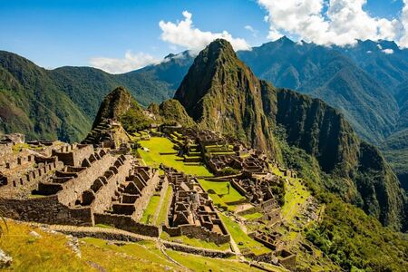

Atractivos Turisticos
Machu Picchu
Machu Picchu es el sitio arqueológico inca más sobresaliente debido a su creativo diseño urbano, la belleza de su arquitectura y el fino trabajo en piedra de sus construcciones.
Q'oyllur Ritti

Todos los años, antes del Corpus Christi, se realiza en Cusco la peregrinación al santuario del Señor de Qoyllurit’i. Una celebración religiosa que congrega a miles de devotos de todas partes del mundo que llegan a la cima del nevado Sinkara para venerar al Tayta de las Nieves, una imagen de Cristo grabada en una roca.
Sacsayhuaman
Es un sitio arqueológico inca cuya construcción data del siglo XV. Es una de las edificaciones del imperio incaico que fue construido con un objetivo ceremonial y como templo del Sol.